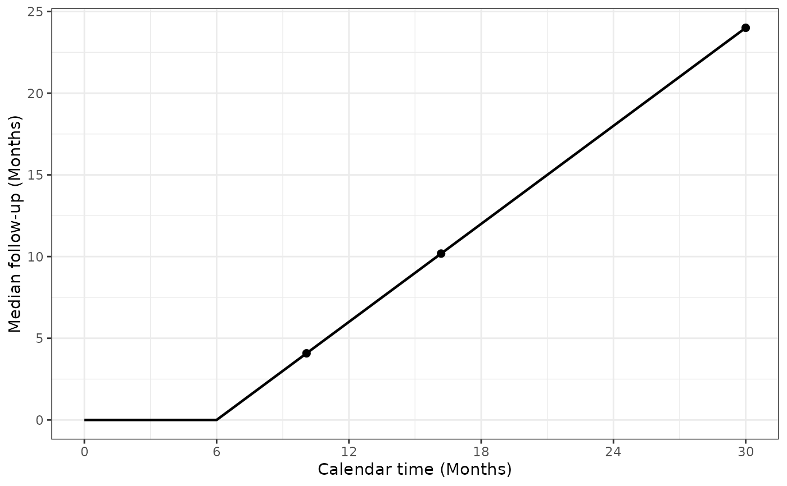
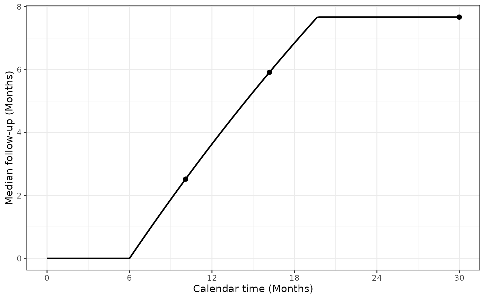

Plot median follow-up across all planned participants
Source:R/minMedianFollowUp.R
plotMinMedianFollowUp.RdPlot the forward calculation from medianFollowUp(), optionally
marking a design's analysis times. Dropout and event-stopping conventions,
input overrides and the planned-population definition are shared with that
function. The historical plot name is retained.
Usage
plotMinMedianFollowUp(
x = NULL,
calendarTime = NULL,
showAnalysisTimes = TRUE,
timename = "Months",
gamma = NULL,
R = NULL,
eta = NULL,
etaE = NULL,
lambdaC = NULL,
hr = NULL,
S = NULL,
ratio = NULL,
stopAtEvent = FALSE,
tol = 1e-08
)Arguments
- x
Optional
nSurvorgsSurvdesign supplying defaults.- calendarTime
Nonnegative calendar cutoffs. With
x, NULL creates a grid from trial start to its final analysis; withoutx, supply this vector explicitly. Passed asTto the calculation.- showAnalysisTimes
Whether to mark the analysis times in
x.- timename
Nonempty time-unit label. Month(s) and year(s) use axis breaks every 6 months and 0.5 years, respectively.
- gamma
Enrollment rates, using the control-arm rate convention of
gsSurv(). Rows are calendar enrollment periods, columns are strata. A scalar is constant over periods and strata; a vector specifies periods.- R
Positive enrollment-period durations. Enrollment stops at
sum(R). Required withgammawhen not supplied byx.- eta
Control dropout hazards; finite and nonnegative. Rows are participant-time hazard intervals, columns are strata. A scalar is constant over intervals and strata; a vector specifies intervals. Standalone default is zero.
- etaE
Experimental dropout hazards, in the same form as
eta. When omitted, inherit fromx, otherwise default toeta. ExplicitNULLrequests equality with the resolvedeta.- lambdaC
Control event hazards, in the same form as
eta. Required fromxor explicitly whenstopAtEvent = TRUE; otherwise not used or required.- hr
Positive experimental/control event hazard ratio, required when event stopping is enabled. Experimental event hazards are
lambdaC * hr. Unlike a design solve,hr = 1is permitted.- S
Positive durations of event/dropout hazard intervals, excluding the final interval, which extends indefinitely. These intervals measure time since each participant enrolled, not calendar time. With
Khazard rows,length(S) = K - 1. Omission inheritsx$S; explicitNULLrequests constant hazards. Also used for dropout when events do not stop follow-up. Enrollment and hazard grids may differ.- ratio
Positive experimental/control allocation ratio; scalar or one value per stratum. Standalone default is 1.
- stopAtEvent
Nonmissing logical scalar. If
FALSE(default), follow-up stops at dropout or cutoff, ignoring events. IfTRUE, it stops at the first of event, dropout and cutoff.- tol
Positive absolute numerical tolerance in follow-up-time units, default
1e-8.
Examples
x <- gsSurv(gamma = 10, R = 12, T = 30, minfup = 18)
plotMinMedianFollowUp(x)

plotMinMedianFollowUp(x, stopAtEvent = TRUE)
